Übersetzungen und geteilte Ansicht
LemmaLoom kann Dokumente in andere Sprachen übersetzen. Wenn Sie ein Dokument übersetzen, wird die Übersetzung als eigenes Dokument gespeichert und erscheint in der Seitenleiste unter dem Original. Dieses neue Dokument können Sie wie gewohnt lesen, kodieren und abfragen. Außerdem werden alle Kodierungen, Memos, Lesezeichen und Verknüpfungen, die Sie einer Sprachfassung hinzufügen, in die anderen kopiert.
Übersetzungen können fehlende Sprachunterstützung in der Grammatikanalyse von LemmaLoom ersetzen. Da LemmaLoom nur Englisch, Deutsch und Chinesisch indiziert, können Sie zum Beispiel einen spanischen Meinungsbeitrag lesen und kodieren; Lenses und Wortskizzen ermöglicht aber erst eine automatische deutsche Übersetzung. Sie können eine Übersetzung auch nutzen, um Ihren Text mit seinem eigenen Wortlaut in einer anderen Sprache zu vergleichen oder um Material in einer Sprache, die Sie weniger gut beherrschen, in Übersetzung neben dem Originaltext zu lesen. Wenn Sie Ihre Texte übersetzen, können Kolleginnen und Kollegen Ihre Kodierung in Sprachen nachvollziehen, die sie besser verstehen. Grammatische Ergebnisse aus Übersetzungen beschreiben allerdings immer den Wortlaut des maschinell übersetzten Textes (siehe Übersetzungen in Auswertungen weiter unten in diesem Kapitel).
Alle Beispiele in diesem Kapitel stammen aus „Klimadebatte“, dem Beispielprojekt von LemmaLoom, das unter Ablage ▸ Importieren ▸ Beispielprojekt bereitsteht (siehe Das Beispielprojekt in Kapitel 1, Einführung). Im Beispielprojekt „Klimadebatte“ ist der deutschsprachige aktivistische Meinungsbeitrag „Uns läuft die Zeit davon“ einmal ins Englische übersetzt; die Übersetzung heißt „Uns läuft die Zeit davon (Englisch)“. Die Kodierungen, das Memo, das Lesezeichen und die Verknüpfung des Originals sind in die Übersetzung übernommen.
Wichtige Begriffe
- In LemmaLoom ist ein Original ein Dokument, das Sie importiert haben. Eine Übersetzung ist dagegen jedes Dokument, das LemmaLoom aus einem Original erzeugt hat. Nur Originale lassen sich übersetzen, und ein Original kann Übersetzungen in mehreren Sprachen haben. Importieren Sie ein übersetztes Dokument selbst, gilt es als gewöhnliches Dokument, denn nur von LemmaLoom erzeugte Übersetzungen gehören zu einem Original.
- Sprachfassungen sind das Original eines Dokuments und alle seine Übersetzungen. „Uns läuft die Zeit davon“ und „Uns läuft die Zeit davon (Englisch)“ sind beide Sprachfassungen desselben Meinungsbeitrags.
- Die Zuordnung verbindet jeden Satz des Originals mit seinem Gegenstück in der Übersetzung. LemmaLoom legt die Zuordnung beim Übersetzen an, damit Annotationen an der richtigen Stelle landen und die beiden Sprachfassungen gemeinsam scrollen können.
- Kopie nennt LemmaLoom die Annotation, die es den anderen Sprachfassungen eines Dokuments hinzufügt, sobald Sie eine von ihnen mit einer Kodierung, einem Memo, einem Lesezeichen oder einer Verknüpfung annotieren.
- Die geteilte Ansicht teilt die Leseansicht in zwei Bereiche nebeneinander, den linken Bereich oder Hauptbereich und den rechten Bereich. Der Hauptbereich behält die Tableiste, der rechte zeigt ein einzelnes Dokument unter einer eigenen Kopfzeile. Ihr aktiver Bereich ist der Bereich, in den Sie zuletzt geklickt haben. Der aktive Bereich bestimmt auch, auf welches Dokument sich der Inspektor und die Befehle der Menüleiste beziehen.
Ein Dokument übersetzen
LemmaLoom nutzt die in macOS integrierte Übersetzungsfunktion. Wenn Sie ein Sprachpaar zum ersten Mal verwenden, müssen Sie die beiden Sprachen über macOS herunterladen.
Welche Sprachen verfügbar sind, hängt von Ihrer macOS-Version ab. Übersetzen Sie aus der Ausgangssprache in eine andere Sprache als Englisch, Deutsch oder Chinesisch, erhalten Sie Dokumente, die Sie wie gewohnt lesen, mit der Suchleiste durchsuchen, kodieren und annotieren können. Lenses, Grammatikansichten und Wortskizzen setzen Englisch, Deutsch oder Chinesisch voraus (siehe Andere Sprachen in Kapitel 21, Analyse und Indizierung).
Eine Übersetzung erstellen
„Uns läuft die Zeit davon (Englisch)“ ist eine Übersetzung des deutschen Meinungsbeitrags im Projekt „Klimadebatte“. Die Abbildung zeigt den Dialog Übersetzen, eingestellt auf eine Übersetzung des skeptischen Meinungsbeitrags „Netto-Null wird teuer“ ins Englische.
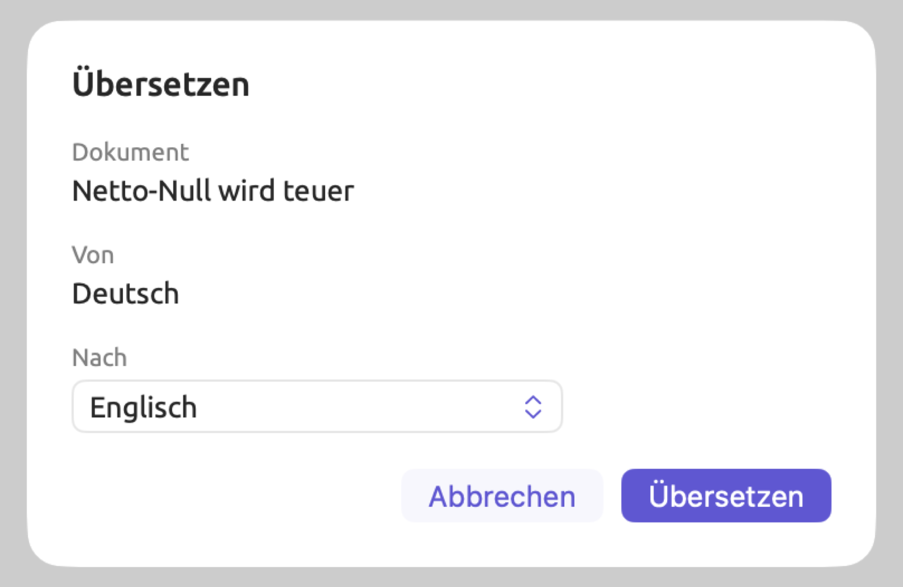
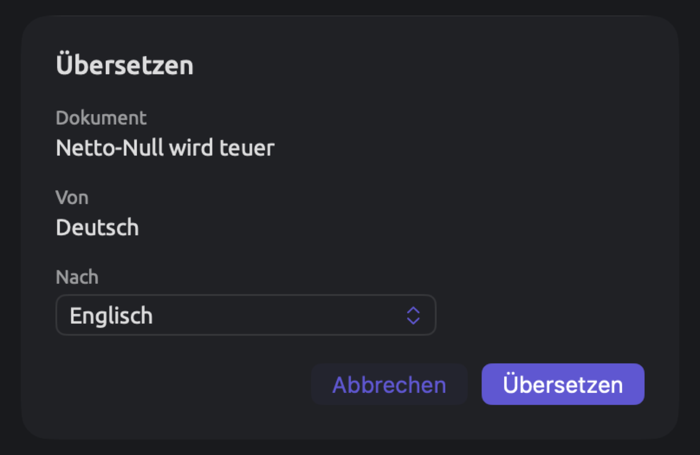
So erstellen Sie eine Übersetzung:
- Klicken Sie in der Seitenleiste mit der rechten Maustaste auf das Dokument und wählen Sie Übersetzen, oder wählen Sie es aus und dann Projekt ▸ Übersetzen. Der Befehl steht nur für Originale zur Verfügung.
- Der Dialog Übersetzen zeigt unter Dokument den Titel des Dokuments und unter Von seine Sprache. Wählen Sie unter Nach die Sprache, in die übersetzt werden soll.
- Klicken Sie auf Übersetzen.
- Hat macOS die beiden Sprachen noch nicht heruntergeladen, fragt es, ob es sie laden soll. Bestätigen Sie den Download. Solange macOS die Sprachen vorbereitet, bleibt Übersetzen deaktiviert; sobald sie bereit sind, schließt sich der Dialog, und die Übersetzung beginnt.
Sind beide Sprachen schon auf Ihrem Mac, schließt sich der Dialog sofort, wenn Sie auf Übersetzen klicken.
Die Übersetzung läuft im Hintergrund. In der Seitenleiste erscheint unter dem Original eine neue Zeile mit dem Namen der Sprache. Diese Zeile zeigt entweder eine Aktivitätsanzeige, solange die Übersetzung auf ihren Start wartet, oder einen Fortschrittsring, der den Fortschritt der Übersetzung anzeigt. Ist die Übersetzung erfolgreich abgeschlossen, ersetzt LemmaLoom die Zeile durch das neue Dokument. Es könnte etwa „Netto-Null wird teuer (Englisch)“ heißen. Als Nächstes beginnt die Indizierung; während dieser Phase bleibt das Lens-Menü der Übersetzung deaktiviert (siehe Was ohne die Analyse verfügbar ist in Kapitel 21, Analyse und Indizierung).
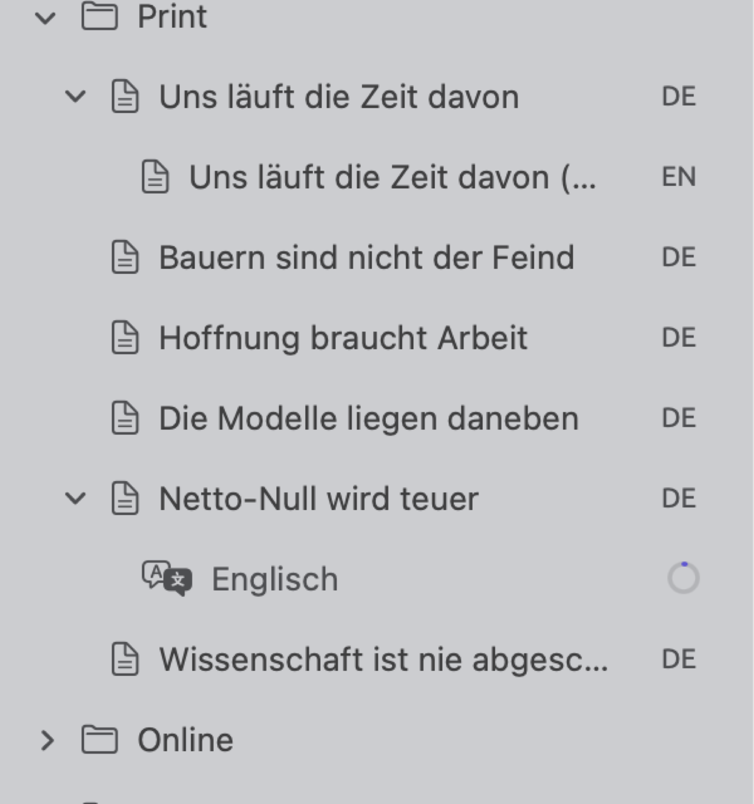
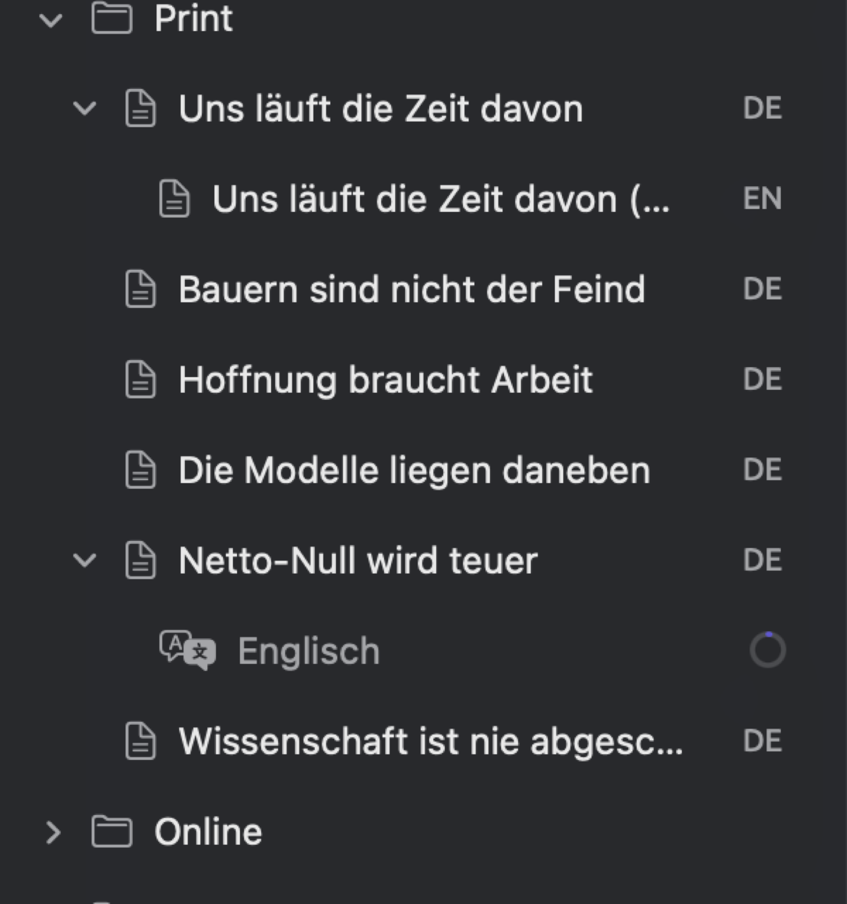
Der Dialog Übersetzen
Von zeigt die Sprache des Dokuments. Diese Sprache haben Sie entweder beim Import gewählt, oder LemmaLoom hat sie beim Import erkannt. Ist die Sprache falsch, korrigieren Sie sie vor dem Übersetzen in den Dokumenteigenschaften (siehe Dokumenteigenschaften in Kapitel 3, Projekte und Dokumente).
Nach listet alle Sprachen auf, in die macOS übersetzen kann, alphabetisch sortiert. Die Sprache Ihres Dokuments fehlt in der Liste, ebenso jede Sprache, in die Ihr Dokument schon übersetzt ist oder gerade übersetzt wird, denn ein Original kann pro Sprache nur eine Übersetzung haben. Anfangs wählt LemmaLoom die erste Ihrer bevorzugten Sprachen aus den Systemeinstellungen (Allgemein ▸ Sprache & Region), die macOS als Zielsprache unterstützt. Gibt es keine solche, wählt es Englisch und, falls auch das nicht möglich ist, den ersten Eintrag im Menü Nach.
Bietet macOS keine geeignete Sprache zum Übersetzen an, zeigt dieses Menü Nicht unterstützt; ist keine Sprache mehr zur Auswahl übrig, steht im Menü Nach der Eintrag Bereits übersetzt. Unterstützt macOS die Übersetzung zwischen zwei bestimmten Sprachen nicht, erscheint direkt unter Von und Nach der Hinweis Für diese Sprachen ist keine Übersetzung verfügbar.
Ist Übersetzen deaktiviert, halten Sie den Mauszeiger darauf, um zu sehen, was die Schaltfläche blockiert:
| Grund | Was Sie tun können |
|---|---|
| Wird geladen | Warten Sie, während LemmaLoom macOS fragt, welche Sprachen es anbietet oder ob es zwischen den beiden gewählten Sprachen übersetzen kann. |
| Keine Sprache gewählt | Wählen Sie unter Nach eine Sprache. |
| Nicht unterstützt | macOS bietet keine Zielsprache an oder kann nicht aus der Sprache des Dokuments übersetzen. Ist Von falsch, korrigieren Sie die Sprache in den Dokumenteigenschaften. |
| Bereits übersetzt | Für jede angebotene Sprache gibt es eine Übersetzung. Um erneut in eine davon zu übersetzen, löschen Sie zuerst die vorhandene Übersetzung in dieser Sprache (siehe Erneut übersetzen weiter unten in diesem Kapitel). |
| Wird vorbereitet | Warten Sie, während macOS die Sprachen herunterlädt. |
Schlägt der Download fehl oder lehnen Sie ihn ab, erscheint unter den Eingabefeldern eine Erklärung in Rot. Danach können Sie erneut auf Übersetzen klicken.
Sprachdownloads
Die Sprachen, die macOS zum Übersetzen verwendet, stehen auch allen anderen Apps zur Verfügung, die auf Ihrem Mac übersetzen. In den Systemeinstellungen unter Allgemein ▸ Sprache & Region ▸ Übersetzungssprachen sehen Sie, welche Sprachen für die Übersetzung installiert sind, und können diejenigen entfernen, die Sie nicht mehr brauchen.
Löschen Sie eine der beiden Sprachen, während eine Übersetzung zwischen ihnen noch aussteht, schlägt diese Übersetzung fehl. Übersetzen Sie das Dokument dann erneut; macOS bietet an, die Sprache noch einmal zu installieren.
Übersetzungsqualität und Arbeitsspeicher
Für viele Sprachpaare gibt es neben dem Standardmodell von macOS ein größeres Übersetzungsmodell mit höherer Qualität. Steht das größere Modell für beide beteiligten Sprachen zur Verfügung, verwendet LemmaLoom dieses bessere Modell, andernfalls das Standardmodell.
Das größere Modell belegt während der Arbeit mehrere Gigabyte Arbeitsspeicher. Auf einem Computer mit insgesamt 8 GB Arbeitsspeicher kann eine lange Übersetzung die Indizierung anderer Dokumente oder andere Apps, die neben LemmaLoom laufen, spürbar ausbremsen. Starten Sie lange Übersetzungen deshalb in der Regel erst, wenn Transkriptionen und Importe größerer Textmengen abgeschlossen sind.
Eine Übersetzung verfolgen
LemmaLoom übersetzt immer nur ein Dokument auf einmal. Starten Sie mehrere Übersetzungen, kommen sie in eine Warteschlange und warten, bis sie an der Reihe sind. Fenster ▸ Aktivität (⌥⌘0) listet sie unter Übersetzung auf. Jede Zeile zeigt den Titel, den die Übersetzung erhalten wird, etwa „Netto-Null wird teuer (Englisch)“, und das Projekt, zu dem das Dokument gehört. Bis eine Übersetzung beginnt, steht in ihrer Zeile Wartet; während sie läuft, zeigt die Zeile den Fortschritt in Prozent, etwa Übersetzung 40 %.
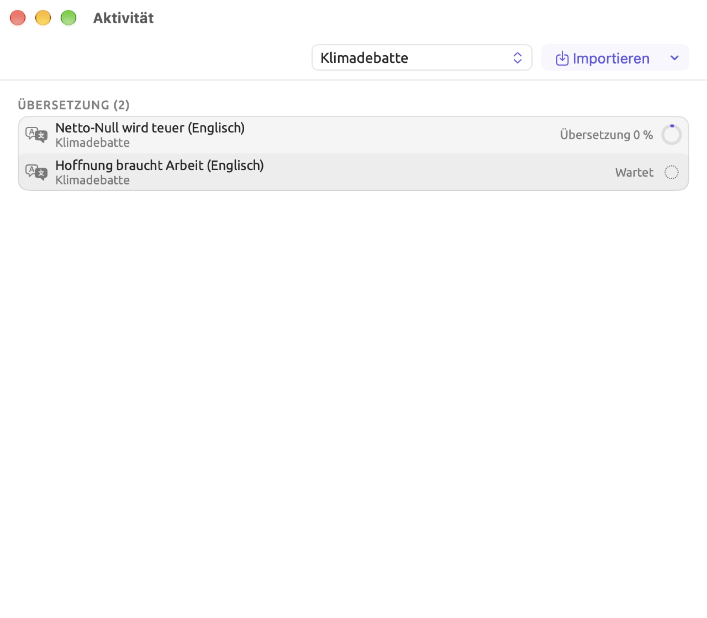
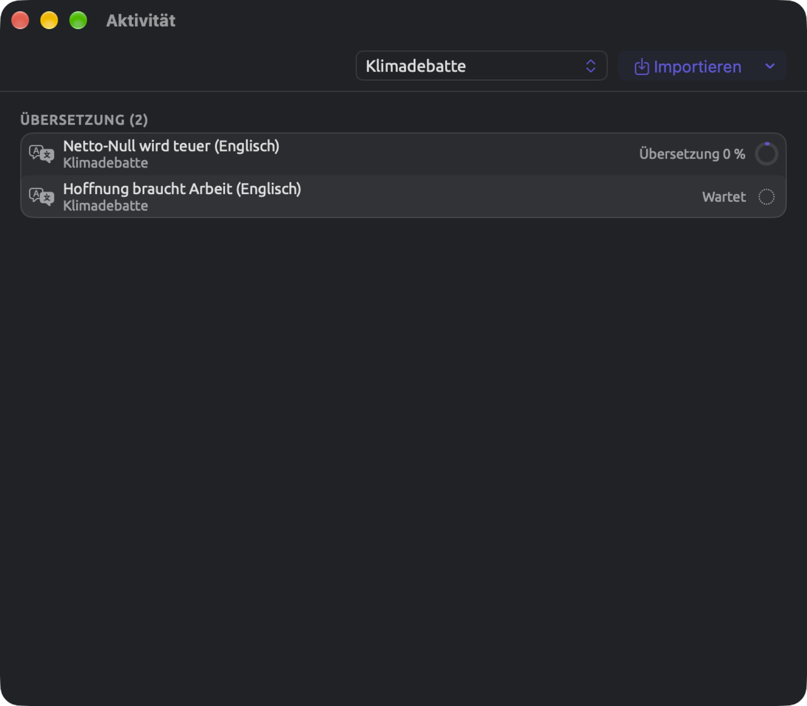
Schlägt eine Übersetzung fehl, wechselt sie samt Angabe des Grundes in den Abschnitt Fehlgeschlagen des Aktivitätsfensters. Ihre Zeile verschwindet aus der Seitenleiste, und im Dialog Übersetzen steht die Sprache wieder zur Wahl. Klicken Sie auf Wiederholen, um das Dokument noch einmal von vorn zu übersetzen.
Wiederholen funktioniert nur, solange Sie die Sprachen nicht gelöscht haben. Haben Sie sie gelöscht, starten Sie die Übersetzung erneut über die Seitenleiste; macOS bietet dann an, die Sprachen wieder herunterzuladen. Eine fehlgeschlagene Übersetzung bleibt im Aktivitätsfenster, bis Sie sie wiederholen, das Original löschen oder LemmaLoom beenden.
Wartet oder läuft eine Übersetzung, wenn Sie LemmaLoom beenden, wird sie abgebrochen, und Sie müssen sie neu starten.
Wie Text übersetzt wird
Die Übersetzungsfunktion von LemmaLoom verwendet den Übersetzer von macOS, der Ihren Text Satz für Satz übersetzt. LemmaLoom teilt Ihren Text zunächst an den Zeilenumbrüchen und diese Abschnitte dann in einzelne Sätze. Ist Ihr Text das Transkript einer Audio- oder Videodatei, teilt LemmaLoom das Transkript zuerst nach seinen Segmenten und dann in Sätze. Die Sätze werden einzeln übersetzt und in ihrer ursprünglichen Reihenfolge wieder zusammengesetzt:
- Absätze und Zeilenumbrüche bleiben in der Übersetzung erhalten.
- Jeder Satz Ihres Textes wird zu einem zusammenhängenden Abschnitt der Übersetzung. Die Zuordnung hält diese Entsprechung fest.
- In Übersetzungen trennt ein Leerzeichen die Sätze. Ausnahmen sind Sprachen, die keine Leerzeichen zwischen Wörtern brauchen, etwa Chinesisch; dort folgen die Sätze direkt aufeinander.
- Sätze, für die macOS keine Übersetzung liefern konnte, bleiben in der Originalsprache stehen.
Da der Übersetzer jeweils nur den aktuellen Satz sieht, kann ein Wort, das vom vorigen Satz abhängt, etwa ein Pronomen, falsch übersetzt werden. Sätze, die auf zwei Zeilen verteilt sind, wie in einer Textdatei mit einem Zeilenumbruch am Ende jeder Zeile, werden in zwei Teilen übersetzt. Fügen Sie solche Zeilen deshalb vor dem Übersetzen im Original zusammen und korrigieren Sie dort auch andere Fehler (siehe Den Text eines Dokuments bearbeiten in Kapitel 5, Lesen und Bearbeiten).
Übersetzungen von Audio- oder Videodokumenten spielen die Mediendatei des Originals ab und behalten die Segmentierung nach Sprechern samt Zeitangaben bei. Eine Übersetzung der „Radiodebatte“ ins Englische würde also die Redebeiträge von „Moderation“, „Aktivistin“ und „Skeptiker“ auflisten und die Aufnahme von jeder Stelle des englischen Textes aus abspielen.
Übersetzungen im Projekt
Wo Übersetzungen erscheinen
Übersetzungen stehen im Abschnitt Dokumente der Seitenleiste unter ihrem Original. Im Projekt „Klimadebatte“ finden Sie „Uns läuft die Zeit davon (Englisch)“ zum Beispiel in der Gruppe „Print“ unter „Uns läuft die Zeit davon“. Der Name einer Übersetzung ist der Name des Originals, gefolgt von ihrer Sprache in Klammern. Sie können ihn wie den Namen jedes anderen Dokuments ändern. Eine Suche im Feld Dokumente durchsuchen findet Übersetzungen ebenso wie Originale. Da die Titel von Übersetzungen mit ihrer Sprache enden, findet eine Suche nach Englisch alle englischen Übersetzungen eines Projekts, sofern Sie sie nicht umbenannt haben.
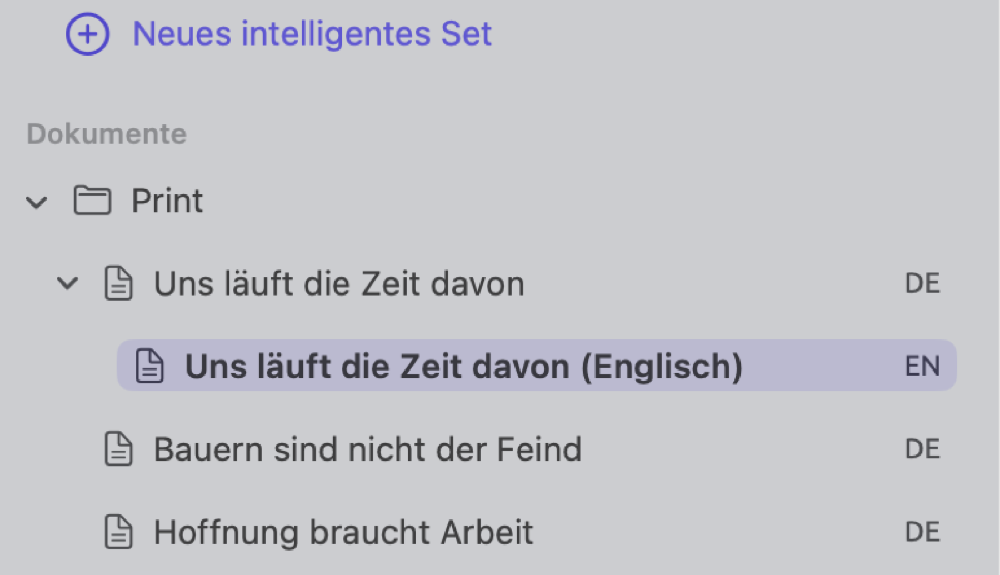
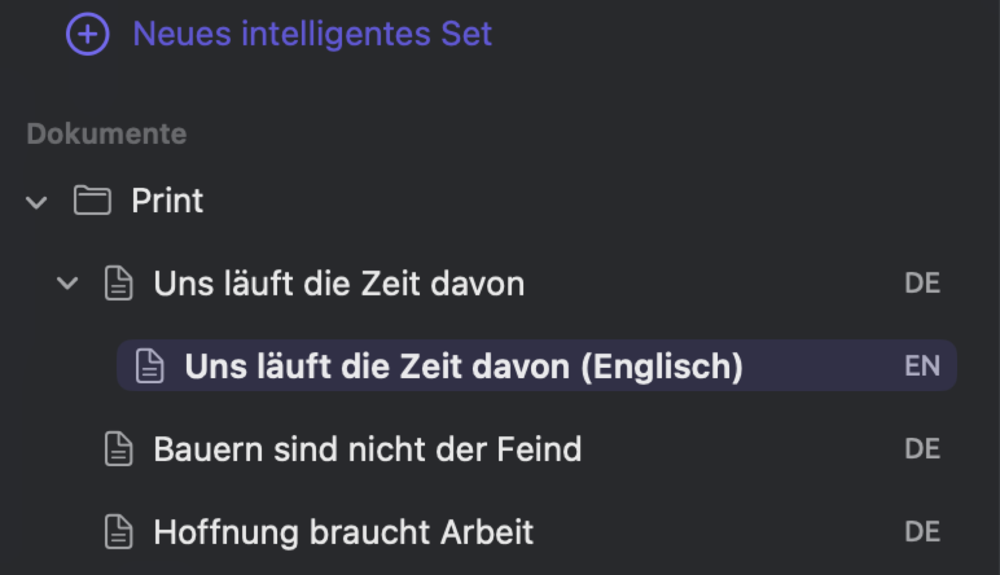
Mit dem Dreiecksymbol neben einem Original klappen Sie seine Übersetzungen ein oder aus. Unter einem Set listet die Seitenleiste nur die Originale auf, und auch die Zahlen neben einem Set oder Tag zählen nur Originale (siehe Übersetzungen in Auswertungen weiter unten in diesem Kapitel).
Was eine Übersetzung mit ihrem Original teilt
Wenn Sie ein Dokument in LemmaLoom übersetzen, übernimmt die Übersetzung von ihrem Original die Autorennamen, das Datum, den Verlag, den Titel der Publikation, die URL, die DOI, die Farbe, die Gruppe, die Tags und die Attributwerte.
Alle Sprachfassungen haben bestimmte Eigenschaften gemeinsam:
- Tags. Wenn Sie die Fassung „Uns läuft die Zeit davon (Englisch)“ mit einem Tag versehen, erhält auch „Uns läuft die Zeit davon“ dieses Tag, und umgekehrt.
- Attributwerte. Legen Sie „Reichweite“ in den Eigenschaften einer beliebigen Fassung fest, gilt der Wert für alle Sprachfassungen gleichermaßen.
- Gruppenzugehörigkeit. Verschieben Sie „Uns läuft die Zeit davon“ in die Gruppe „Online“, wandert seine englische Entsprechung automatisch mit.
- Set-Zugehörigkeit. Die Originaldokumente gehören zu Sets, und ihre Übersetzungen folgen ihnen.
- Codes, die auf ein Dokument oder ein Set beschränkt sind. Ein Code, dessen Geltungsbereich Dokument ist und der „Uns läuft die Zeit davon“ nennt, lässt sich auch in „Uns läuft die Zeit davon (Englisch)“ vergeben, und ein auf das Set „Aktivisten“ beschränkter Code lässt sich in den Übersetzungen der aktivistischen Texte vergeben (siehe Wo ein Code verwendet werden kann in Kapitel 7, Kodieren).
- Kodierungen, Memos, Lesezeichen und Verknüpfungen, und zwar über Kopien. Mehr über Kopien zwischen Sprachfassungen erfahren Sie unter Annotationen in beiden Sprachen weiter unten in diesem Kapitel.
Andere Elemente behält jede Sprachfassung für sich:
- den Titel, die Autorennamen, das Datum, den Verlag, den Titel der Publikation, die URL, die DOI und die Farbe;
- die Sprache;
- den Text und alle Änderungen, die Sie daran vornehmen;
- ihren Index mit seinen Lenses, Statistiken und Grammatikansichten.
In einer Übersetzung arbeiten
Eine maschinelle Übersetzung ins Englische, Deutsche oder Chinesische wird genauso indiziert wie jedes andere importierte Dokument. Maschinelle Übersetzungen erhalten eigene Lenses und im Inspektor eigene Tabs Text, Grammatik, Kodierung und Multimodus, und wie gewohnt liest Abfrage im Tab Multimodus nur die Übersetzung selbst.
Maschinelle Übersetzungen brauchen oft etwas Nacharbeit, weil ein Begriff auf zwei verschiedene Arten übersetzt wurde oder ein Satz keinen Sinn ergibt. Eine Übersetzung bearbeiten Sie genauso wie ein gewöhnliches Dokument. Wählen Sie Dokument ▸ Bearbeiten (⇧⌘E), bearbeiten Sie das Dokument und klicken Sie auf Sichern. Bei Änderungen verschiebt LemmaLoom die Zuordnung zusammen mit den Annotationen, sodass beide Sprachfassungen einander weiterhin richtig zugeordnet bleiben (siehe Wie Annotationen Änderungen folgen in Kapitel 5, Lesen und Bearbeiten).
Eine Änderung betrifft immer nur eine Sprachfassung eines Textes. Wenn Sie ein Original ändern, müssen Sie die Übersetzung löschen, um aus dem geänderten Text eine neue Übersetzung zu erzeugen (siehe Erneut übersetzen weiter unten in diesem Kapitel).
Übersetzungen beim Export
Wenn Sie ein Originaldokument in ein LemmaLoom-Archiv exportieren, sind seine Übersetzungen im Export enthalten. Ein Archiv von „Uns läuft die Zeit davon“ enthält also auch „Uns läuft die Zeit davon (Englisch)“. Ein REFI-QDA-Projekt behandelt das übersetzte Dokument dagegen als eigenständiges Dokument. Soll die Verbindung zwischen den beiden beim Austausch erhalten bleiben, wählen Sie ein LemmaLoom-Archiv. Mehr dazu finden Sie unter Dokumente exportieren in Kapitel 22, Austausch und Export.
Eine Übersetzung neben ihrem Original lesen
Wenn Sie beide Fassungen nebeneinander vergleichen, können Sie prüfen, wie macOS eine Textstelle wiedergegeben hat, bevor Sie mit ihr arbeiten. So können Sie die Übersetzung auch als Referenz geöffnet lassen, während Sie das Original genau lesen. Ebenso lassen sich auf diese Weise die Kodierungen der beiden Fassungen vergleichen.
Die Abbildung zeigt links „Uns läuft die Zeit davon“ und rechts „Uns läuft die Zeit davon (Englisch)“, beide gemeinsam gescrollt. Da die Übersetzung im aktiven Bereich steht, zeigt der Inspektor ihre 13 Kodierungen, die denen des Originals entsprechen.
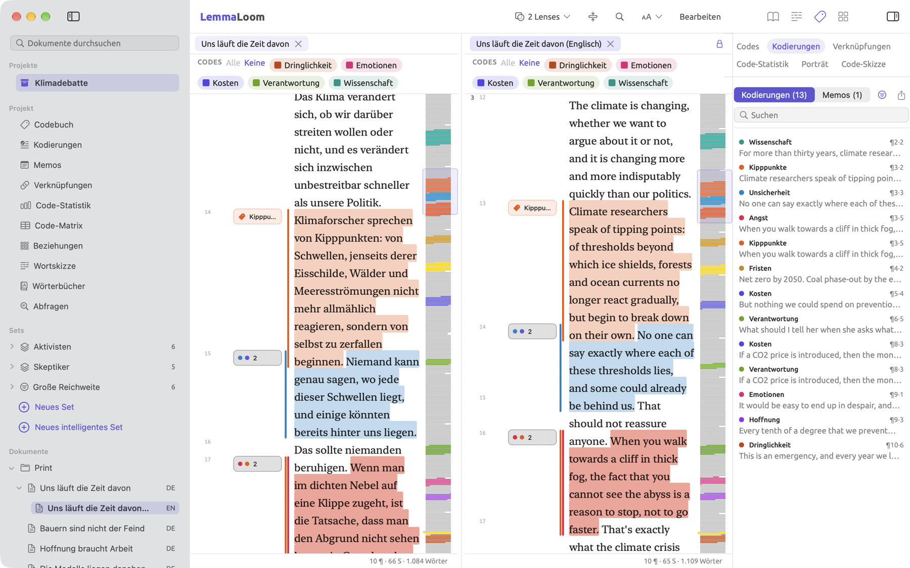
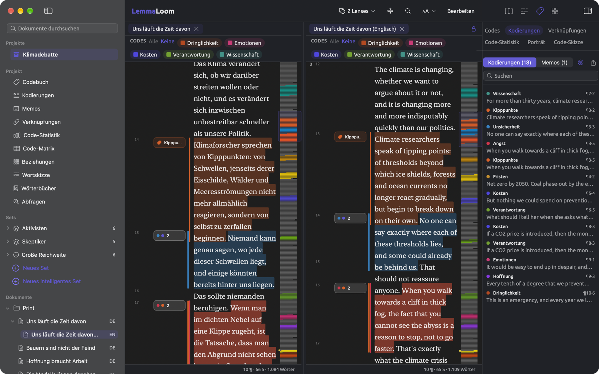
So lesen Sie eine Übersetzung neben ihrem Original:
- Klicken Sie in der Seitenleiste mit der rechten Maustaste auf die Übersetzung und wählen Sie Neben dem Original öffnen, oder wählen Sie Fenster ▸ Neben dem Original öffnen, während die Übersetzung in der Seitenleiste ausgewählt oder in der Leseansicht aktiv ist. Das Original öffnet sich in einem Tab im Hauptbereich, die Übersetzung im rechten Bereich, der damit aktiv wird.
- Damit die beiden gemeinsam scrollen, klicken Sie am rechten Ende der Kopfzeile des rechten Bereichs auf die Schaltfläche mit dem Schloss, Gemeinsam scrollen, oder wählen Sie Darstellung ▸ Gemeinsam scrollen (⌥⌘L).
Hat der rechte Bereich vorher ein anderes Dokument gezeigt, tritt die Übersetzung an dessen Stelle.
Geteilte Ansicht
In der geteilten Ansicht sehen Sie zwei Dokumente gleichzeitig, etwa „Uns läuft die Zeit davon“ neben „Netto-Null wird teuer“, zwei gegensätzliche Standpunkte der Debatte.
Zwei Dokumente nebeneinander öffnen
Ein Dokument können Sie auf mehrere Arten im rechten Bereich öffnen:
- Klicken Sie in der Seitenleiste mit der rechten Maustaste auf ein Dokument und wählen Sie im Kontextmenü In geteilter Ansicht öffnen. Das Dokument öffnet sich im rechten Bereich neben dem Dokument im Hauptbereich. Der Befehl ist deaktiviert, wenn das Dokument bereits im Haupt- oder im rechten Bereich angezeigt wird oder wenn ein Set, eine Detailansicht oder ein Tag aktiv ist.
- Klicken Sie mit der rechten Maustaste auf einen Tab über der Leseansicht und wählen Sie im Kontextmenü In geteilter Ansicht öffnen. Ist ein Dokument aktiv, lassen sich die anderen Tabs mit Dokumenten in der geteilten Ansicht öffnen. Das Dokument verlässt die Tableiste und wechselt in den rechten Bereich.
- Wählen Sie im Menü Fenster den Befehl In geteilter Ansicht öffnen und dann das Dokument, das Sie sehen möchten. Das Untermenü von Fenster ▸ In geteilter Ansicht öffnen zeigt das in der Seitenleiste ausgewählte Dokument und die anderen Dokument-Tabs.
- Wählen Sie in der Seitenleiste zwei Dokumente aus (klicken Sie auf das eine und mit gedrückter Befehlstaste ⌘ auf das andere). Klicken Sie dann mit der rechten Maustaste auf eines davon und wählen Sie im Kontextmenü Nebeneinander öffnen, oder wählen Sie in der Menüleiste Fenster ▸ Nebeneinander öffnen. Das Dokument, das weiter oben in der Liste steht, erscheint links, das andere rechts.
- Bei einer Übersetzung wählen Sie im Kontextmenü Neben dem Original öffnen, wie oben beschrieben.
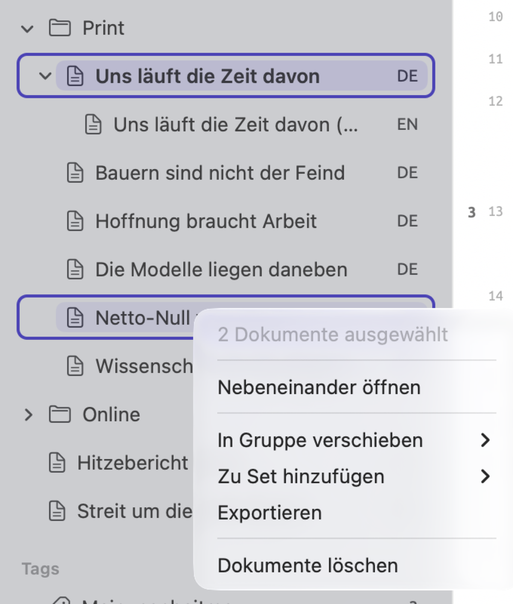
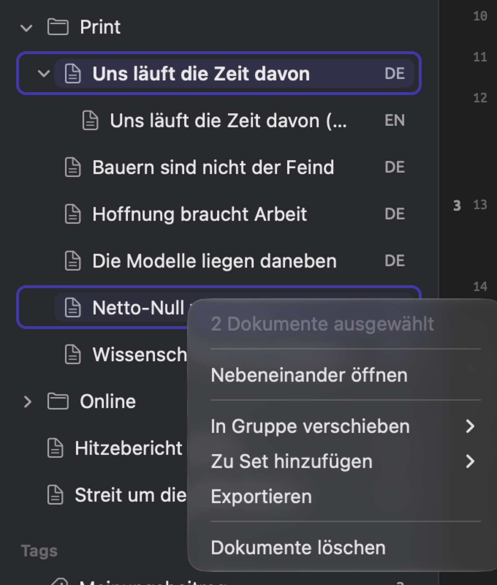
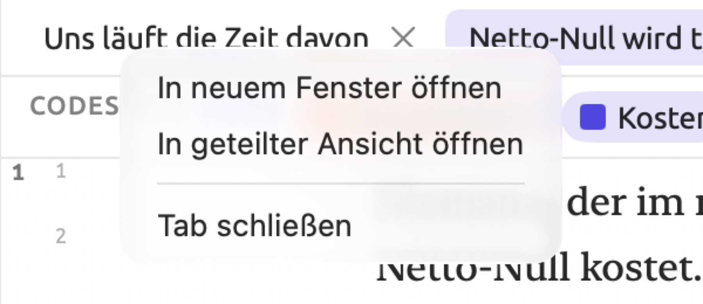
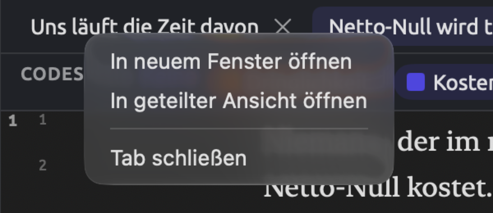
Im rechten Bereich ist immer nur ein Dokument geöffnet; öffnen Sie dort ein anderes, schließt sich das bisherige. Ein Dokument erscheint jeweils nur in einem Bereich.
Der aktive Bereich
Der Tab des aktiven Bereichs, im rechten Bereich dessen Kopfzeile, ist voll hervorgehoben; Tab oder Kopfzeile des anderen Bereichs erscheint heller. Wenn Sie ein Dokument in der geteilten Ansicht öffnen, wird der rechte Bereich aktiv. Ein Klick auf einen Tab sowie Fenster ▸ Nächsten Tab anzeigen (⇧⌘]) und Fenster ▸ Vorherigen Tab anzeigen (⇧⌘[) machen den linken Bereich aktiv.
Folgendes bezieht sich auf das Dokument, das im aktiven Bereich geöffnet ist:
- der Inspektor;
- alle Werkzeuge in der Titelleiste (Lens-Menü, Schaltfläche zum Einklappen, Suche, Darstellungseinstellungen und Bearbeiten);
- Menübefehle, darunter Bearbeiten ▸ Suchen (⌘F), Dokument ▸ Bearbeiten (⇧⌘E) und Dokument ▸ Automatisch kodieren… (⇧⌘A);
- die Esc-Taste, mit der Sie im aktiven Bereich die aktuelle Auswahl aufheben oder eine geöffnete Suchleiste schließen;
- das Fenster Diagramm (siehe Das Fenster Diagramm in Kapitel 11, Der Grammatik-Inspektor) und schließlich
- der Dokument-Geltungsbereich im Fenster Wortskizze.
In der Seitenleiste ist das Dokument des aktiven Bereichs hervorgehoben. Ein Klick auf ein Dokument in der Seitenleiste lädt es in den linken Bereich und macht diesen aktiv. Steht das Dokument bereits im rechten Bereich, wird stattdessen der rechte Bereich aktiv.
Der Inspektor folgt dem aktiven Bereich
Wenn Sie in den anderen Bereich klicken, zeigt der Inspektor das Dokument dieses Bereichs, behält aber seinen Tab, seine Facette und seine Breite und bleibt ein- oder ausgeblendet wie zuvor. Ist zum Beispiel für „Uns läuft die Zeit davon“ die Facette Kodierungen des Tabs Kodierung geöffnet, zeigt ein Klick in „Uns läuft die Zeit davon (Englisch)“ an derselben Stelle die Kodierungen der Übersetzung.
Was jeder Bereich beibehält
Lenses, Suchleiste, Auswahl und Scrollposition sind für jeden Bereich getrennt. In der geteilten Ansicht können Sie etwa „Uns läuft die Zeit davon“ mit der Lens Modalität lesen und „Netto-Null wird teuer“ mit der Lens Kohäsion. Schrift, Textgröße, Randspalte und Layout gelten für beide Bereiche gemeinsam.
Anfangs sind beide Bereiche gleich breit. Um das Verhältnis zu ändern, ziehen Sie die Trennlinie zwischen ihnen. Jeder Bereich hat eine Mindestbreite. Die Aufteilung gilt für alle Ihre Projekte. Ist ein Fenster zu schmal für zwei Bereiche in Mindestbreite, erhält trotzdem jeder Bereich die Hälfte der Breite.
Zeigt der linke Bereich das Projektregal, ein Set oder ein Tag, ist der rechte Bereich ausgeblendet, bis wieder ein Dokument-Tab aktiv ist.
LemmaLoom merkt sich für jedes Projekt das Dokument im rechten Bereich. Wenn Sie zu einem Projekt zurückkehren oder LemmaLoom erneut öffnen, steht das Dokument wieder rechts, allerdings ist Gemeinsam scrollen dann ausgeschaltet.
Die geteilte Ansicht schließen
So schließen Sie die geteilte Ansicht:
- Klicken Sie auf das × in der Kopfzeile des rechten Bereichs.
- Klicken Sie mit der rechten Maustaste auf die Kopfzeile und wählen Sie im Kontextmenü Geteilte Ansicht schließen.
- Wählen Sie Fenster ▸ Geteilte Ansicht schließen.
- Klicken Sie in den rechten Bereich und wählen Sie Ablage ▸ Tab schließen (⌘W).
Das Dokument auf der rechten Seite wird zusammen mit der geteilten Ansicht geschlossen. Ist in der geteilten Ansicht der linke Bereich aktiv, schließt ⌘W wie gewohnt dessen aktiven Tab. Ist links nur ein Tab geöffnet und schließen Sie ihn, wechselt das Dokument aus dem rechten Bereich in den Hauptbereich.
Im Kontextmenü der Kopfzeile finden Sie außerdem In neuem Fenster öffnen. Damit öffnen Sie das Dokument in einem eigenen Dokumentfenster mit eigenem Inspektor (siehe Ein Dokument in einem eigenen Fenster öffnen in Kapitel 5, Lesen und Bearbeiten). In der Menüleiste bewirkt Fenster ▸ In neuem Fenster öffnen genau dasselbe, allerdings für das Dokument im gerade aktiven Bereich.
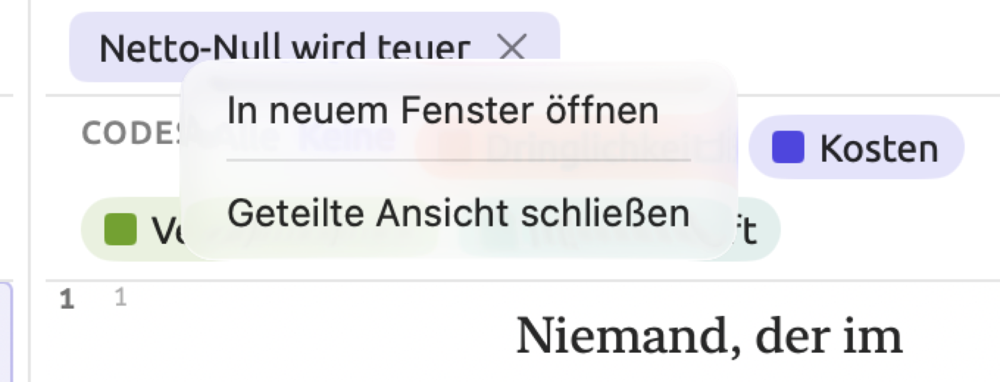
Gemeinsam scrollen
Beim gemeinsamen Scrollen bleiben Original und Übersetzung vertikal auf gleicher Höhe, sodass beim Lesen die einander entsprechenden Absätze nebeneinander stehen. Zeigen die beiden Bereiche Sprachfassungen desselben Dokuments, steht am rechten Ende der Kopfzeile des rechten Bereichs das Schlosssymbol zur Verfügung. Das gilt für ein Paar aus Original und Übersetzung ebenso wie für zwei Übersetzungen desselben Originals. Klicken Sie auf das Schloss oder wählen Sie Darstellung ▸ Gemeinsam scrollen (⌥⌘L), damit die beiden Bereiche gemeinsam scrollen. Das Schloss schließt sich, und der Menübefehl erhält ein Häkchen. Direkt nach dem Einschalten springt der rechte Bereich zu der Textstelle, die oben im linken Bereich steht, und wenn Sie einen Bereich scrollen, scrollt der andere automatisch mit. Bei jeder anderen Kombination ist Gemeinsam scrollen deaktiviert.
LemmaLoom gleicht das Scrollen anhand der Zuordnung zwischen den beiden Fassungen ab. Es nimmt den Punkt am oberen Rand des Bereichs, den Sie scrollen, und sucht den Satz, in dem dieser Punkt liegt. Dann scrollt es die andere Fassung, bis die entsprechende Stelle dieses Satzes am oberen Rand ihres eigenen Bereichs steht. Innerhalb eines Satzes behält LemmaLoom den proportionalen Abstand bei, sodass die Stelle nach einem Viertel eines deutschen Satzes der Stelle nach einem Viertel seiner englischen Übersetzung entspricht. Der Abgleich funktioniert auch dann, wenn ein Satz in den beiden Fassungen unterschiedlich viele Zeilen umfasst.
Machen Sie im linken Bereich ein anderes Dokument aktiv, verschwindet das Schloss, und das gemeinsame Scrollen endet. Wird das Original oder eine andere seiner Sprachfassungen wieder aktiv, scrollen die Bereiche wieder gemeinsam. Wenn Sie die geteilte Ansicht schließen, endet Gemeinsam scrollen.
Annotationen in beiden Sprachen
Bei Übersetzungen hat jede Sprachfassung ihre eigenen Kodierungen, Memos, Verknüpfungen und Lesezeichen. Wenn Sie eine Textstelle in „Uns läuft die Zeit davon“ kodieren, vergibt LemmaLoom denselben Code automatisch an der entsprechenden Textstelle in „Uns läuft die Zeit davon (Englisch)“, und umgekehrt. Sobald Sie einen Text kodiert haben, bleiben die Kodierungen miteinander verbunden. Sie können dann jede Fassung für sich auswerten oder vergleichen, wie eine kodierte Textstelle in jeder Sprache lautet.
Was kopiert wird
Wenn Sie eine neue Übersetzung eines Dokuments erstellen, kopiert LemmaLoom seine Kodierungen, Memos, Verknüpfungen und Lesezeichen in die neue Übersetzung. Ebenso überträgt LemmaLoom alles, was Sie danach einer Sprachfassung hinzufügen, automatisch in alle anderen Sprachfassungen:
- eine Kodierung mitsamt ihrem Code;
- ein Memo zum Dokument oder zu einer Textstelle mitsamt Text, Code und Tags;
- ein Lesezeichen mitsamt Kommentar und Farbe;
- eine Verknüpfung mitsamt Relation, Kommentar, Farbe und Tags, sofern sie nicht zwei Sprachfassungen desselben Dokuments verbindet.
Beim Kopieren einer Verknüpfung versetzt LemmaLoom nur das Ende der Verknüpfung, das im übersetzten Dokument liegt. Im Projekt „Klimadebatte“ verbindet zum Beispiel eine Verknüpfung eine Textstelle im Dokument „Keine Panik“ mit einer Textstelle in „Uns läuft die Zeit davon“. Die Kopie dieser Verknüpfung in der englischen Übersetzung von „Uns läuft die Zeit davon“ führt von genau derselben Textstelle in „Keine Panik“ zur übersetzten Textstelle in „Uns läuft die Zeit davon (Englisch)“. Wäre auch „Keine Panik“ übersetzt, würden zwei weitere Kopien der Verknüpfung die entsprechende Textstelle dieser Übersetzung mit „Uns läuft die Zeit davon“ und mit „Uns läuft die Zeit davon (Englisch)“ verbinden.
Eine Verknüpfung zwischen zwei Textstellen von „Uns läuft die Zeit davon“ wird als Verknüpfung zwischen den entsprechenden Textstellen der englischen Übersetzung kopiert.
Kopien von Annotationen lassen sich zusammen mit der Annotation in einem Schritt mit Bearbeiten ▸ Widerrufen (⌘Z) rückgängig machen. Auch Kodierungen, die Automatisch kodieren… erzeugt, werden in Ihre Übersetzungen kopiert. Siehe dazu Textstellen automatisch kodieren in Kapitel 7, Kodieren.
Kopien ändern und löschen
Änderungen an einer Annotation übernimmt LemmaLoom automatisch in alle ihre Kopien:
- Wenn Sie den Text, den Code oder die Tags eines Memos bearbeiten, betrifft das alle seine Fassungen gleichermaßen;
- Änderungen am Kommentar oder an der Farbe eines Lesezeichens oder an Relation, Kommentar, Farbe oder Tags einer Verknüpfung betreffen alle Kopien gleichermaßen;
- Attributwerte, die Sie einer Kodierung zuweisen, gelten für alle Kopien gleichermaßen.
Löschen Sie die Annotation selbst in einem Dokument, werden alle ihre Kopien zugleich gelöscht; entfernen Sie die Kodierung mit „Dringlichkeit“ im Satz in „Uns läuft die Zeit davon (Englisch)“, verschwindet sie auch aus „Uns läuft die Zeit davon“.
Die Positionen von Annotationen gehören dagegen zum jeweiligen Dokument. Wenn Sie eine Fassung des Textes bearbeiten, verschieben sich Ihre Annotationen entsprechend (siehe Wie Annotationen Änderungen folgen in Kapitel 5, Lesen und Bearbeiten); die Kopien dieser Annotationen in anderen Fassungen behalten ihre Positionen.
Wo Kopien gespeichert werden
Beim Platzieren von Kopien nutzt LemmaLoom die Satzzuordnung, die die Sätze der beiden Fassungen eines Textes paarweise verbindet. Ihre Kopie landet deshalb im richtigen übersetzten Satz.
Annotationen, die ganze Sätze umfassen, werden exakt so kopiert, wie sie sind. Bei Teilen von Sätzen berechnet LemmaLoom dagegen, nach welchem Anteil eines Satzes eine Textstelle beginnt und endet, gemessen an der Gesamtzahl seiner Zeichen. Mit diesem Anteil platziert es die Kopie an der entsprechenden Stelle im übersetzten Satz:
ist die Gesamtzahl der Zeichen, Leerzeichen und Satzzeichen vor dem Anfang (oder dem Ende) der ausgewählten Textstelle im Originalsatz. Diese Zahl geteilt durch , die Länge dieses Satzes in Zeichen, ergibt den Anteil . Multipliziert mit (gelesen „L Strich“), der Länge des übersetzten Satzes, ergibt dieser Anteil („q Strich“), die Stelle im übersetzten Satz. Dieser Wert wird auf die nächste ganze Zahl gerundet; liegt er genau in der Mitte zwischen zwei ganzen Zahlen, wird er aufgerundet. In Sprachen, in denen Leerzeichen die Wörter trennen, wird die Kopie anschließend auf ganze Wörter erweitert. Außerdem werden Leerzeichen am Anfang und am Ende jeder Kopie entfernt.
Nehmen Sie als Beispiel diesen Satz aus „Uns läuft die Zeit davon“:
Auf einem Podium klingen diese Zahlen sicherlich beeindruckend, aber schauen Sie genau hin, wer noch im Amt sein wird, wenn es so weit ist.
Seine englische Übersetzung lautet:
On a podium, these numbers certainly sound impressive, but take a closer look at who will still be in office when the time comes.
Die beiden Sätze sind 139 und 129 Zeichen lang, Leerzeichen und Punkt mitgezählt. Angenommen, die Textstelle diese Zahlen im ersten Satz ist mit „Fristen“ kodiert. Auf einem Podium klingen und das folgende Leerzeichen ergeben zusammen 25 Zeichen. Die ganze Wendung Auf einem Podium klingen diese Zahlen umfasst 37 Zeichen. Die Textstelle beginnt also nach 25 Zeichen und endet nach 37:
Gerundet ergibt das 23 und 34. Die Kopie reicht im zweiten Satz also von der Stelle nach dem 23. Zeichen bis zum 34. Zeichen einschließlich und umfasst damit ers certain. Auf ganze Wörter erweitert wird daraus numbers certainly.
Eine weitere annotierte Textstelle lautet wer noch im Amt sein wird, wenn es so weit ist und ist mit „Verantwortung“ kodiert. Sie beginnt nach 92 Zeichen und reicht bis zum 138. Zeichen. Daraus ergeben sich die Positionen und , gerundet 85 und 128. Die Kopie beginnt nach dem 85. Zeichen, genau vor will, und reicht bis zum 128. Zeichen einschließlich. Sie umfasst also will still be in office when the time comes.
Weil das Deutsche das Verb klingen vor diese Zahlen stellt (im Englischen folgt sound auf these numbers), erfasst die erweiterte Kopie numbers certainly zwar numbers, aber nicht these. Die Kopie bleibt dennoch im richtigen Satz. Die Wörter vor wer nehmen im deutschen Satz einen größeren Anteil ein als die Wörter vor who im englischen; die zweite Kopie beginnt deshalb ein Wort zu spät und lässt who aus. Die Zahl der Kodierungen pro Dokument stimmt weiterhin, ebenso die Ergebnisse von Abfragen, die nach Sätzen mit einem bestimmten Code suchen.
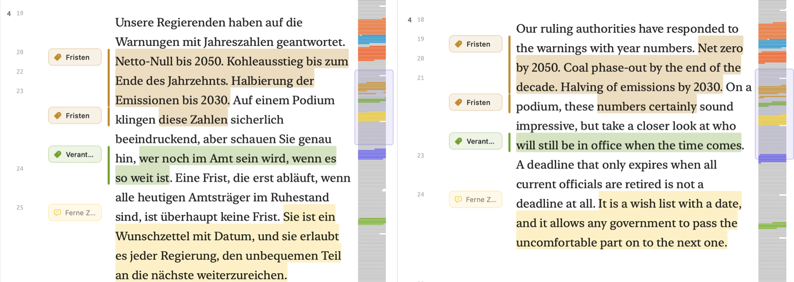
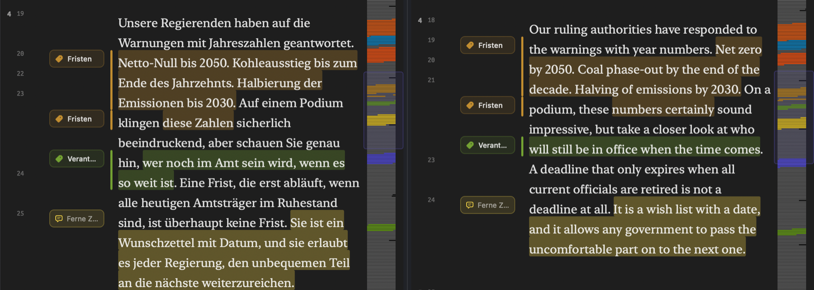
Wo Ihre Methode es zulässt, kodieren Sie möglichst ganze Sätze, denn deren Kopien sind exakt. Bei kleineren Auswahlen nutzen Sie die Kopie, um den richtigen Satz zu finden, denn die Wörter, die sie umfasst, können von denen abweichen, die Sie kodiert haben.
Originale und Übersetzungen löschen
Um ein Original oder eine Übersetzung zu löschen, klicken Sie mit der rechten Maustaste darauf, wählen Dokument löschen und klicken in der Meldung auf Löschen. (Siehe Dokumente löschen in Kapitel 3, Projekte und Dokumente.)
Wenn Sie eine Übersetzung löschen, entfernen Sie nur diese Übersetzung:
- Ihre Kodierungen, Memos, Lesezeichen und Verknüpfungen werden gelöscht; die entsprechenden Kodierungen, Memos, Lesezeichen und Verknüpfungen im Original und in anderen Übersetzungen bleiben erhalten.
- Verknüpfungen zwischen der Übersetzung und dem Original werden gelöscht.
- Codes, deren Geltungsbereich auf die Übersetzung eingestellt ist, nennen danach das Original und lassen sich im Original und seinen übrigen Übersetzungen vergeben.
- Bei einer Aufnahme bleibt die Mediendatei erhalten, da das Original sie selbst verwendet.
Wenn Sie das Originaldokument löschen, werden alle seine Übersetzungen mitgelöscht, auch wenn die Meldung nur das Original nennt. Wartet im Aktivitätsfenster noch eine unfertige Übersetzung des Originals, wird sie sofort abgebrochen. Eine Übersetzung, die bereits läuft, wird dagegen zu Ende geführt, und das Aktivitätsfenster listet sie unter Fehlgeschlagen mit dem Grund Dokument nicht gefunden.
Mit Bearbeiten ▸ Dokument löschen widerrufen (⌘Z) holen Sie das gelöschte Dokument mitsamt seinen Übersetzungen und Annotationen zurück.
Erneut übersetzen
Um eine Übersetzung nach Änderungen am Original auf den neuen Stand zu bringen oder ganz neu zu beginnen, löschen Sie die vorhandene Übersetzung und erstellen aus dem Original eine neue. Dabei gehen alle Änderungen an der alten Übersetzung verloren, ebenso ihr Titel, falls Sie ihn geändert haben, und alle Verknüpfungen zwischen ihr und dem Original.
- Klicken Sie mit der rechten Maustaste auf die Übersetzung, wählen Sie Dokument löschen und klicken Sie dann auf Löschen.
- Klicken Sie mit der rechten Maustaste auf das Original, wählen Sie Übersetzen und unter Nach dieselbe Sprache.
- Klicken Sie auf Übersetzen.
Jede Ihrer Annotationen aus der früheren Übersetzung wurde in das Originaldokument kopiert. Ihre neue Übersetzung erhält deshalb jede Annotation zurück, platziert anhand der neuen Zuordnung.
Übersetzungen in Auswertungen
Wenn Sie ein Set von Dokumenten oder sogar ein ganzes Projekt auswerten, berücksichtigt die Auswertung nur die Originaldokumente, sofern Sie nichts anderes festlegen. Auswertungen eines einzelnen Dokuments betrachten genau dieses Dokument, ob Original oder Übersetzung. Um „Uns läuft die Zeit davon (Englisch)“ für sich auszuwerten, öffnen Sie es also und verwenden den Inspektor.
| Auswertung | Was sie liest |
|---|---|
| Der Inspektor und Abfragen im Tab Multimodus eines Dokuments | Dieses Dokument |
| Codebuch, Kodierungen, Memos, Code-Statistik, Code-Matrix und Beziehungen für ein Set oder das Projekt | Originale |
| Verknüpfungen für ein Set oder das Projekt | Jede Verknüpfung einmal |
| Abfragen für ein Set, das Projekt oder alle Projekte | Originale, sofern Sie das Korpus nicht ändern |
| Wortskizzen und der Skizzenraum für ein Set oder das Projekt | Originale, sofern Sie das Korpus nicht ändern |
| Die Häufigkeiten in der Ansicht Wörterbücher | Originale |
| Automatisch kodieren… für ein Set oder das ganze Projekt | Originale. Ist beim Öffnen von Automatisch kodieren… eine Übersetzung aktiv, wird diese Übersetzung anstelle ihres Originals gelesen. |
| Intelligente Sets | Originale |
Kodierungen in einer Übersetzung werden in den betreffenden Ansichten über ihre Kopien im Originaldokument erfasst. Kodieren Sie zum Beispiel eine Textstelle in „Uns läuft die Zeit davon (Englisch)“, zählt die Code-Statistik des Sets „Aktivisten“ das als ein Vorkommen in „Uns läuft die Zeit davon“. Ausnahmen sind die Meldungen beim Löschen oder Zusammenführen von Codes; sie berücksichtigen sowohl die Kopie als auch das Original. Eine Kodierung mit „Dringlichkeit“ in „Uns läuft die Zeit davon“ und ihre Kopie in „Uns läuft die Zeit davon (Englisch)“ erscheinen in diesen Meldungen als zwei kodierte Segmente.
Wenn Sie eine Übersetzung einem Set hinzufügen, wird stattdessen ihr Original hinzugefügt, wie unter Übersetzungen in Kapitel 8, Sets, Gruppen, Tags und Attribute beschrieben.
Ergebnisse aus Übersetzungen spiegeln wider, wie macOS den Text formuliert hat. Beim Übersetzen können Heckenausdrücke und Modalverben hinzukommen oder wegfallen, und die Wortstellung kann sich ändern. Nutzen Sie die Ergebnisse deshalb, um Textstellen zu finden, und lesen Sie diese Textstellen anschließend genau im Original.
Die Option Korpus in Abfragen
In der Ansicht Abfragen eines Sets und des Projekts sowie unter Fenster ▸ Abfragen legt das Menü, das Originale zeigt, oben in der Bedingung Optionen das Korpus fest (siehe Optionen in Kapitel 15, Eine Abfrage erstellen). Sie können dort Übersetzungen wählen, um die Grammatik von Originalen in einer anderen Sprache als Englisch, Deutsch oder Chinesisch über ihre Übersetzungen abzufragen, oder Beide, um Treffer aus allen Sprachfassungen zu erhalten.
- Originale, das voreingestellte Korpus, liest die Dokumente im festgelegten Geltungsbereich.
- Übersetzungen liest stattdessen die Übersetzungen dieser Dokumente, in allen Sprachen, in die sie übersetzt wurden.
- Beide liest Originale und Übersetzungen.
LemmaLoom leitet den Geltungsbereich aus den Originalen ab. Stellen Sie in „Klimadebatte“ das Korpus auf Übersetzungen, liest eine Abfrage im Set „Aktivisten“ die Übersetzungen der aktivistischen Texte, hier also „Uns läuft die Zeit davon (Englisch)“. Eine Abfrage im Tab Multimodus eines Dokuments liest nur ihr eigenes Dokument.
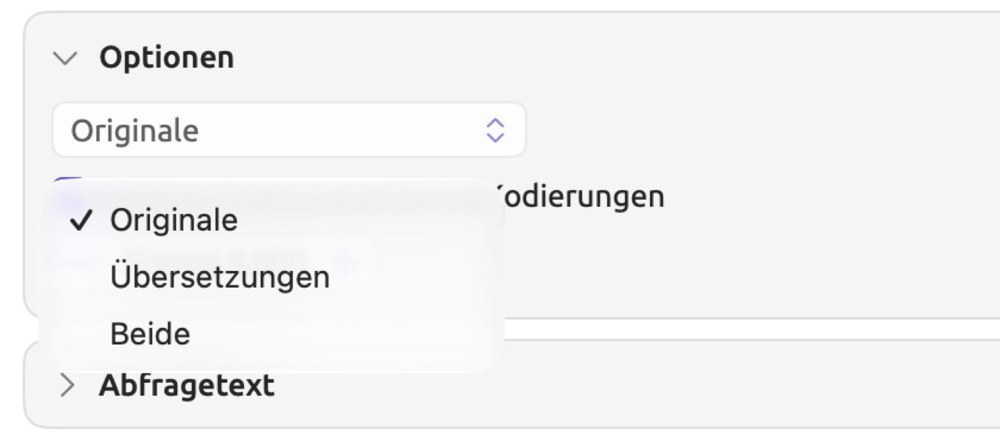
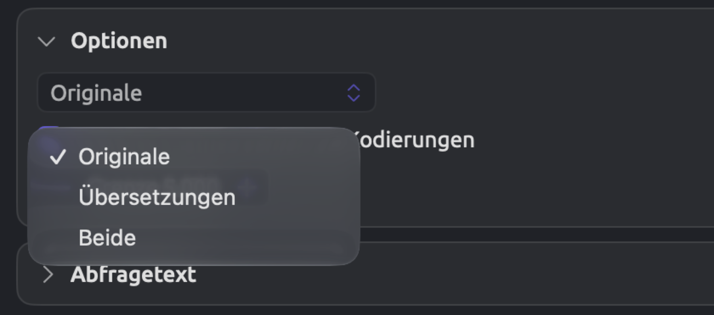
Beide umfasst Originale und ihre Übersetzungen, sodass eine Annotation und ihre Kopie zwei Treffer ergeben. Fragen Sie zum Beispiel Kodierungen mit dem Code „Dringlichkeit“ ab, findet die Abfrage eine Kodierung im Original „Uns läuft die Zeit davon“ zusammen mit der entsprechenden Kodierung in der Übersetzung „Uns läuft die Zeit davon (Englisch)“.
Haben Originale Übersetzungen in mehr als eine Sprache, mischen Übersetzungen und Beide die Sprachen. Eine Regel Sprache ist eines von Englisch in der Bedingung Wobei behält nur die englischen Übersetzungen.
In einem Vergleich von Schlüsselwortlisten hängen beide Seiten vom Korpus ab; mit Übersetzungen bestehen also beide Seiten aus Übersetzungen (siehe Schlüsselwörter in Kapitel 16, Abfrageergebnisse und Statistik).
Ihre Abfrage behält die gewählte Option. Wenn Sie Abfrageergebnisse als Markdown exportieren, nennen die Herkunftsangaben sie unter Korpus (siehe Markdown mit Herkunftsangaben in Kapitel 16, Abfrageergebnisse und Statistik).
Das Dokumentfeld Ist Übersetzung hilft, Originale von Übersetzungen zu unterscheiden. Wenn Sie in der Ansicht Abfragen des Projekts das Korpus auf Beide stellen und dann Bibliothek · Dokumente mit der Regel Ist Übersetzung ist wahr suchen, werden alle Übersetzungen aufgelistet. Intelligente Sets arbeiten nur mit Originalen und bieten deshalb stattdessen Hat Übersetzungen; mit der Regel ist wahr liefert dieses Feld die Originaldokumente, die Übersetzungen haben.
Übersetzungen in Wortskizzen
Wenn LemmaLoom eine Wortskizze oder den Skizzenraum für ein Set, ein Tag oder ein Projekt erstellt, liest es die Originale. Haben Dokumente in Ihrem Geltungsbereich Übersetzungen ins Englische, Deutsche oder Chinesische, steht in der Leiste oben hinter dem Wortfeld ein Menü zur Verfügung. Anfangs steht darin Originale. Unter Korpus wählen Sie im Menü Originale oder eine der Übersetzungssprachen. Da Wortskizzen Text immer in nur einer Sprache auswerten, gibt es einen Eintrag pro Übersetzungssprache. In „Klimadebatte“ heißt dieser Eintrag zum Beispiel Übersetzungen (Englisch), für „Uns läuft die Zeit davon (Englisch)“. Im Fenster Wortskizze legt dasselbe Menü auch den Geltungsbereich fest und zeigt dann beides an, etwa „Klimadebatte“ · Originale.
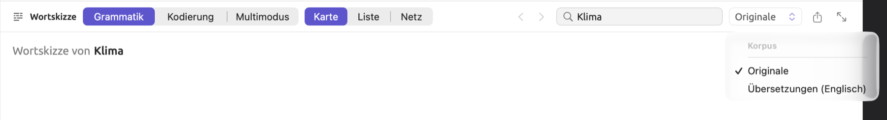
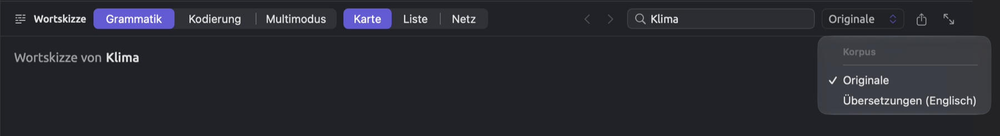
Die gewählte Sprache bestimmt, welche Übersetzungen einbezogen werden. Haben Sie eine Sprache gewählt, geben Sie das Wort in dieser Sprache ein, hier also climate statt Klima.
Mehr zu Wortskizzen finden Sie in Kapitel 12, Wortskizze, mehr zum Skizzenraum in Kapitel 14, Skizzenraum.
Textstellen über ihre Übersetzung finden
Sie können auch die Zuordnungen selbst abfragen, etwa wenn Sie wissen, wie eine Textstelle in der Übersetzung lautet, und sie im Original finden möchten. In „Uns läuft die Zeit davon“ möchten Sie zum Beispiel wissen, welche deutschen Sätze eine Übersetzung haben, die das Wort climate enthält.
Die Einheit Übersetzung · Zuordnungen im Menü Suchen liefert einen Treffer für jedes Paar aus einem Satz und seiner Übersetzung. Ihre Felder sind Ausgangstext, Übersetzungstext und Übersetzungssprache. Ausgangstext ist immer der Satz im Dokument Ihrer Abfrage, während die beiden anderen Felder den Satz beschreiben, der ihm zugeordnet ist. In Originaldokumenten ist das die Übersetzung, und für jede Übersetzungssprache entsteht ein eigener Treffer. In übersetzten Dokumenten ist es der Satz des Originals.
Die Relation Übersetzt als in einer Kontextzeile behält die Treffer in jedem Satz, dessen Übersetzung Ihre Regeln erfüllt (siehe Kontext in Kapitel 15, Eine Abfrage erstellen). So erhalten Sie Treffer für die Sätze Ihres Dokuments, deren Übersetzung ein Kriterium erfüllt, etwa ein bestimmtes Wort enthält:
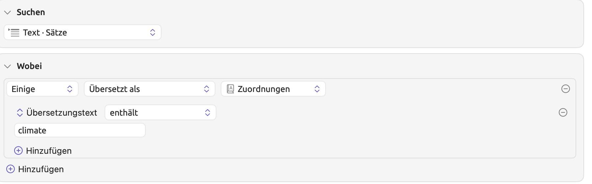
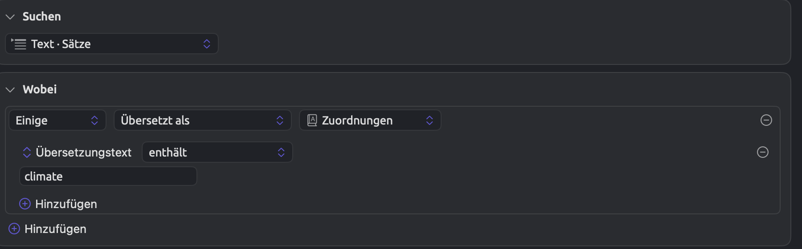
- Öffnen Sie das Dokument. Klicken Sie im Inspektor auf Multimodus und dann auf Abfrage.
- Wählen Sie in der Bedingung Suchen die Einheit Text · Sätze.
- Klicken Sie in der Bedingung Wobei auf Hinzufügen und wählen Sie Kontext hinzufügen. Stellen Sie die Zeile auf Einige, Übersetzt als und Zuordnungen.
- Klicken Sie in der Kontextzeile auf die Schaltfläche Hinzufügen, wählen Sie Regel hinzufügen und als Feld Übersetzungstext.
- Stellen Sie den Vergleich auf enthält und geben Sie das Wort als Wert ein.
Sobald die Regel ihren Wert hat, listen die Ergebnisse sofort alle passenden Sätze auf.
Befehle für Übersetzungen und die geteilte Ansicht
| Befehl | Kurzbefehl | Wo Sie ihn finden |
|---|---|---|
| Projekt ▸ Übersetzen | Auch im Kontextmenü eines Originals in der Seitenleiste | |
| Fenster ▸ Neben dem Original öffnen | Auch im Kontextmenü einer Übersetzung in der Seitenleiste | |
| Fenster ▸ In geteilter Ansicht öffnen | Auch im Kontextmenü eines Dokuments in der Seitenleiste oder eines Tabs | |
| Fenster ▸ Nebeneinander öffnen | Auch im Kontextmenü zweier ausgewählter Dokumente | |
| Fenster ▸ Geteilte Ansicht schließen | Auch im Kontextmenü der Kopfzeile des rechten Bereichs | |
| Fenster ▸ In neuem Fenster öffnen | Auch im Kontextmenü eines Tabs oder der Kopfzeile des rechten Bereichs | |
| Darstellung ▸ Gemeinsam scrollen | ⌥⌘L | Geteilte Ansicht mit zwei Sprachfassungen eines Dokuments |
| Ablage ▸ Tab schließen | ⌘W | Schließt die geteilte Ansicht, wenn der rechte Bereich aktiv ist |
| Fenster ▸ Aktivität | ⌥⌘0 | Listet wartende, laufende und fehlgeschlagene Übersetzungen auf |